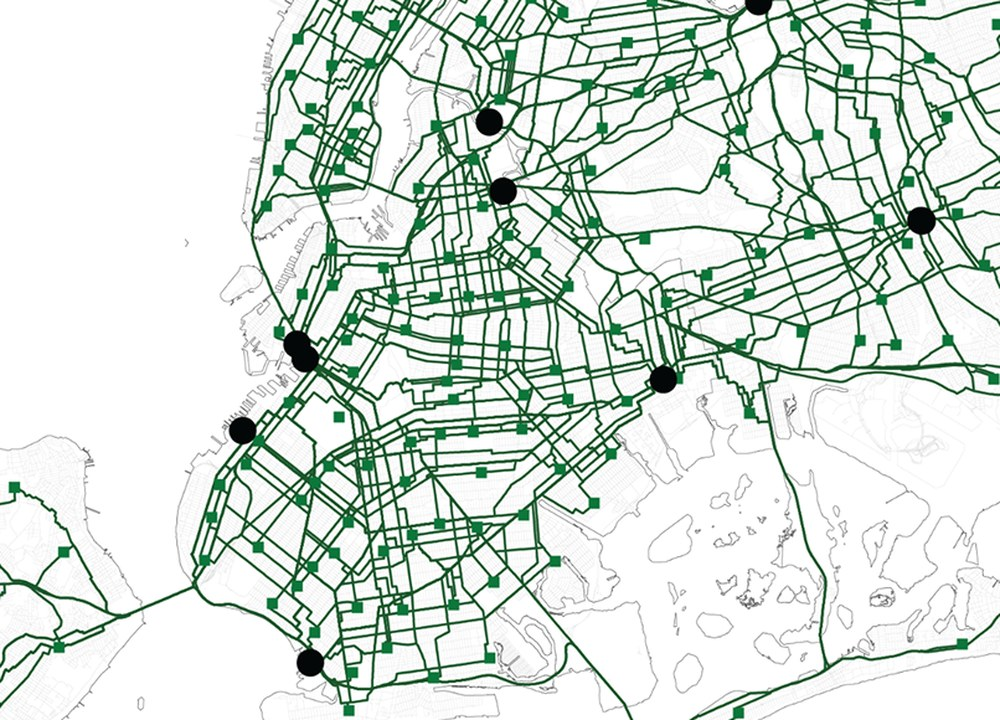
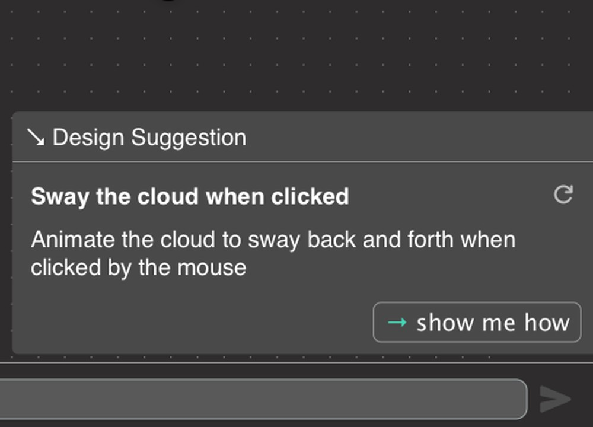
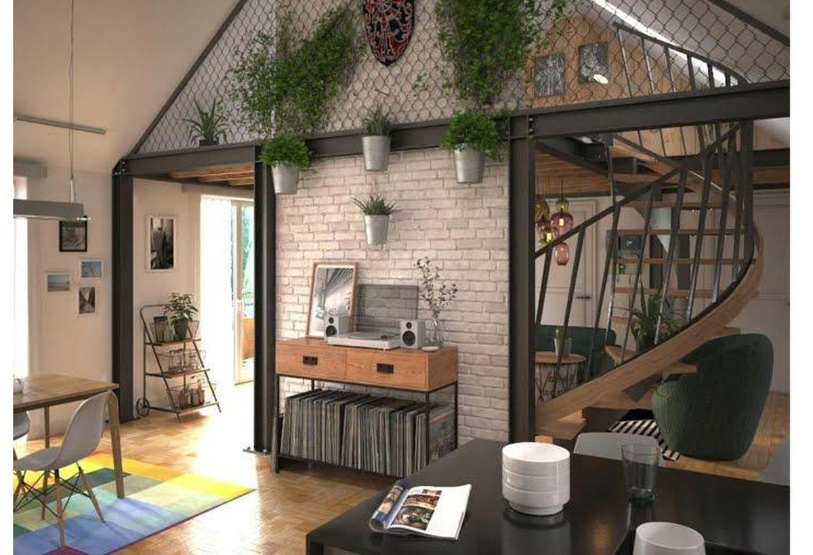
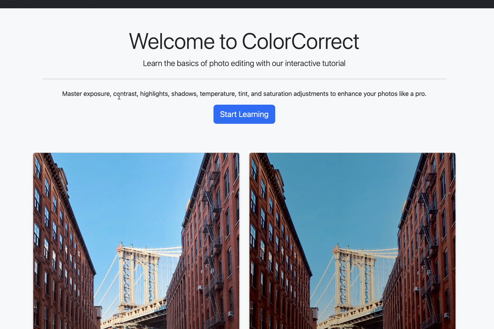

Zoe Homan
Computational design · Spatial analysis · Human‑computer interaction
I'm a Computer Science major and Architecture minor at Barnard College, graduating in May 2027. I'm interested in using computational methods to understand cities and the built environment. My work spans spatial analysis, computational modeling, and the design of interactive tools, with a focus on making complex information easier to explore and understand.
Selected work

Modeling Residential Waste Transportation
Modeled NYC residential waste transport using three routing methods and compared their resulting spatial patterns.
Case study
Design Suggestions for Flowcode
Designed and built an AI-assisted suggestion feature for beginner programmers, evaluated with 11 K–8 educators.
Case study
Neural Shading for Architectural Scenes
Trained a U-Net to predict indoor illumination from geometry and material data, comparing five training configurations.
Case study
Color Correct
Built an interactive photo-editing tutorial with live adjustments, practice exercises, and personalized feedback.
Case studyTools and methods
- Programming and interfaces
- Python · JavaScript · HTML/CSS · React · Figma · Prototyping · User testing · Prompt design
- Spatial analysis
- ArcGIS Pro · Network Analyst · Spatial modeling and statistics · Cartography · Data visualization
- Machine learning and data
- PyTorch · CNNs / U-Net · AWS GPU training · NumPy · pandas · Design research